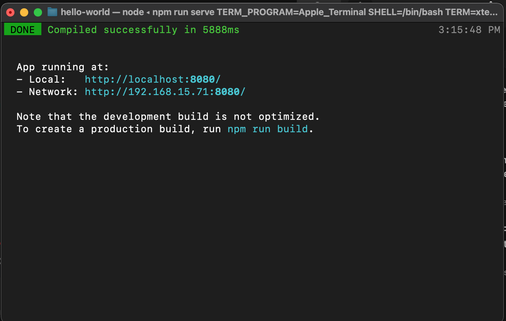
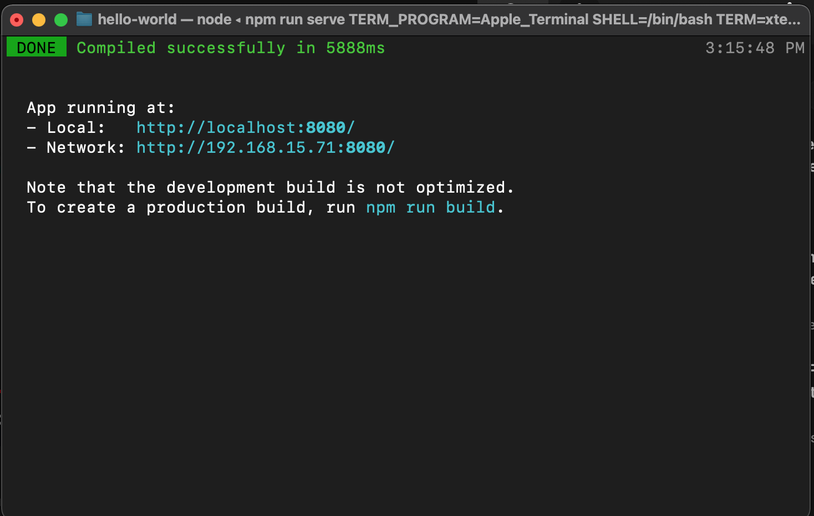

Vue, um framework JS
Apresentação
Vue.js (Vue (pronuncia-se /vjuː/, como view, em inglês)
é um framework JavaScript de código-aberto com objetivo mais
específico no desenvolvimento de interfaces de usuário, dentre
este os aplicativos de página única. É um front-end JavaScript leve.
O Vue foi criado pelo desenvolvedor
independente Evan You, ex-funcionário Google onde obteve larga
experiência na utiliação do AngularJS. O Vue.js foi lançado em 2014.
Nos braços de outros
O Vue.js depende de dois outros softwares: o Node.JS e o npm. Node.JS é um software de código aberto, multiplataforma, que permite a execução de códigos JavaScript fora de um navegador web; enquanto o npm (node package manager) é um gerenciador de pacotes para o Node.JS.
Na prática
Todo computador do lab já tem o npm inslalado. Caso você não consiga executar o Vue, instále-o usando o comando a seguir:
npm install -g @vue/cli
Verifique os softwares instalados solicitando as suas versões:
node --version
vue --version
Para esta atividade, estou usando Node.JS versão 16.15.0LTS, npm versão 8.5.5 e Vue.js versão 5.0.4.
Criando seu primeiro código Vue.js
Rapidamente...
vue create hello-world
//use o preset default
cd hello-world
npm run serve
Agora podemos abrir um navegador, acessar os endereços sugeridos e ver o projeto criado, hello-world.
Veja nas imagens abaixo algumas etapas deste processo e a aparência final do projeto.
 


Criação de projeto
A criação de projetos é muito vinculada ao CLI. Vue CLI é um sistema para o desenvilvimento rápido de aplicações Vue.js. CLI é um pacote npm que chama o vue pelo terminal. O CLI proporciona a criação de pacotes usando o vue create e pode também ser usado para gerenciar os pacotes via interface gráfica, vue ui.
Não usaremos o CLI agora, mas se tiver interesse, consulte aqui.
Nossa primeira aplicação
Veja nosso primeiro código fonte aqui.
Neste código a linha

Explica que para trabalhar com Vue.js o usuário pode faze-lo de várias maneiras, uma delas é usando o CDN (Content Delivery Network), como na linha acima.
A imagem abaixo mostra o núcleo da aplicação:

A div mostrada acima guarda toda a aplicação. Ela
referencia uma aplicação escrita dentro do bloco abaixo que é
uma isntância de um objeto Vue. Este objeto, por sua vez, faz chama renderização de
um documento DOM por uma template de sintaxe simples, message.
Dentro dos atributos da instância de Vue, el, especifica
o local em que "residirá" que a aplicação Vue, ou seja, qual é
o nó do grafo de elementos do DOM. Nesta instância também especificamos os dados que
serão passados a esse objeto, a mensagem.
Podemos alterar essa mensagem chamando a aplicação indiretamente
e enviando uma nova mensagem. Perceba que assim estamos lidando
diretamente com um nó DOM através do Vue.js.
Veja na imagem abaixo como você pode alterar essa mensagem:
No console, altere a mensagem digitando o seguinte comando:
app.message="nova mensagem".
O mesmo comando
pode ser colocado diretamente no script como última linha
para um teste.
Assim criamos nossa primeira aplicação Vue.M
Alterando a primeira aplicação
Na prática, devido a complexidade das eventuais aplicações, de suas multiplicidades e da complexidade evetual do código HTML, podemos dividir o código em duas partes, uma com a criação do nó DOM e outra da aplicação que residirá neste nó. Assim criamos dois arquivos, hello_vue2.html e hello_vue2.js.
Veja código fonte relativo ao hello_vue2.html aqui.
Veja código fonte relativo ao hello_vue2.js aqui.
Alterando via console
Acabamos de criar um código reativo, responsivo. Para verificar essa capacidade,
acesse a console de desenvolvimento e mude a mensagem enviada
ao aplicativo usando o seguinte comando:
app.message="escreva sua nova mensagem aqui".
Experimente variando as mensagens enviadas.
Perceba como mudou o modo de interação com o HTML. Não é mais uma interação direta. Uma aplicação Vue acopla-se a um elemento da DOM, app e e exerce o controle por meio desta aplicação. O código HTML é o que vemos mas a "mágica" acontece na instância do Vue.
Estrutura condicional
Vue quase se aproxima de uma linguagem de programação se considerarmos
a possibilidade de termos estruturas repetitivas e estruturas condicionais.
No exemplo abaixo vemos a inclusão de uma diretiva
v-if. Neste comando o v corresponde a uma diretiva
enquanto que o if a um atributo (um comando, na verdade).
Esse conjunto v-if="seen" faz um teste lógico na variável.
Use a console para alterar o valor da variável. Teste os comandos app3.seen = false e app3.seen = true.
Veja código fonte relativo ao hello_vue3.html aqui.
Veja código fonte relativo ao hello_vue3.js aqui.
Estrutura repetitiva
Podemos usar diretivas Vue para "caminhar" sobre um tipo abstrato de dado (TAD). Existem diversas diretivas, cada uma com sua própria funcionalidade. Neste exemplo, a diretiva v-for pode ser usada para exibir uma lista de itens usando dados de um Array, um TAD de JS.
Veja código fonte relativo ao hello_vue4.html aqui.
Veja código fonte relativo ao hello_vue4.js aqui.
Use a console para acrescentar ou retirar itens da lista.
Teste os comandos
app4.todos.push({ text: 'Novo item' }) e
app4.todos.pop().
Interação via web
Podemos usar diretivas Vue, como a v-on para anexar escutas a eventos (event listeners) que invocam métodos em nossas instâncias Vue
Veja código fonte relativo ao hello_vue5.html aqui.
Veja código fonte relativo ao hello_vue5.js aqui.
O código em execução encontra-se aqui
Neste exemplo você pode dispensar a console.
Mão-dupla
A diretiva v-model promove uma interligação de mão dupla, neste próximo exemplo, entre a caixa de texto e o estado da aplicação.
O código em execução encontra-se aqui
Teste este código fonte hello_vue6.html aqui.
Veja código fonte relativo ao hello_vue6.js aqui.
Nesta aula vimos a versão 2 do Vue, mas já existe a versão 3. Enquanto a v.2 é mais próxima do JS, e também mais fácil para aprender, a v.3 é "empacota" muitas facilidades de JS tornando-a de difícil acesso para os iniciantes.
Na próxima aula veremos mais conceitos e aplicações de Vue e as principais evoluções na versão 3.
Agradecimentos
Notas de aula baseadas no site da Mozilla - iniciando com Vue e no site da Vuejs.org.